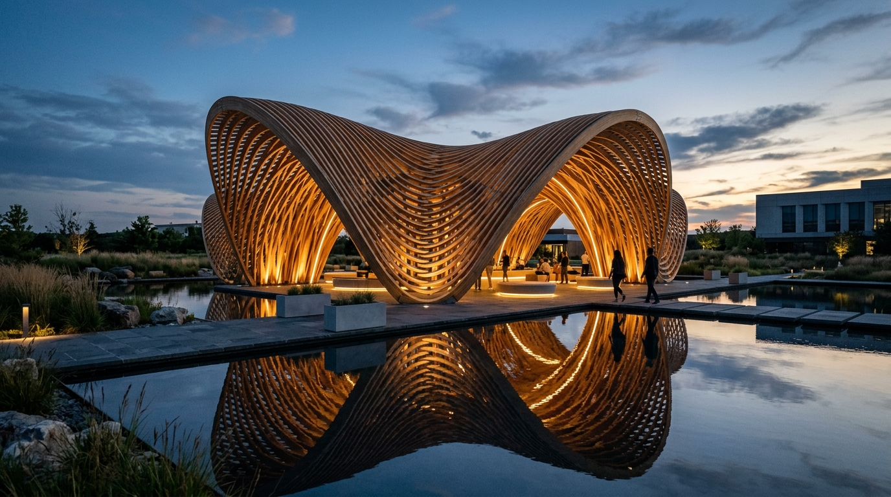
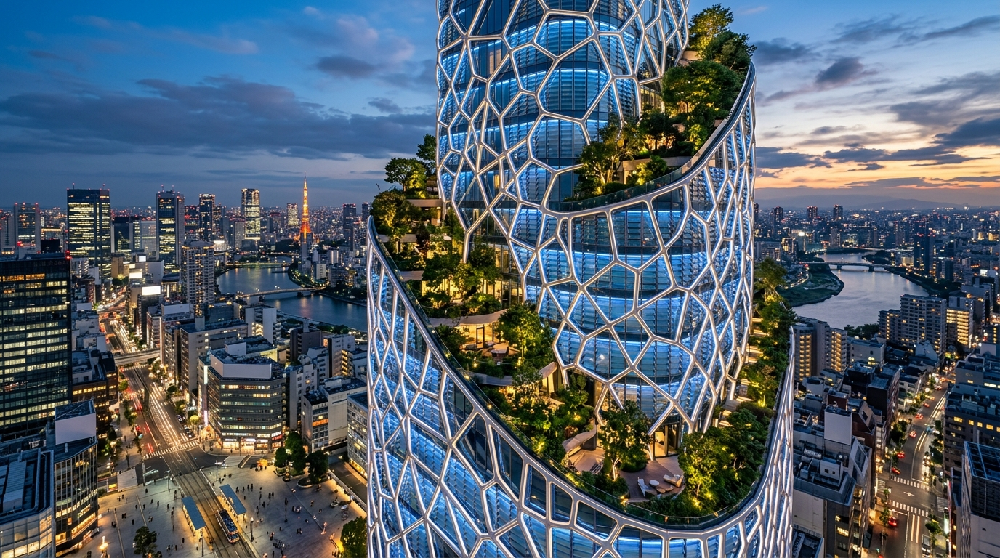
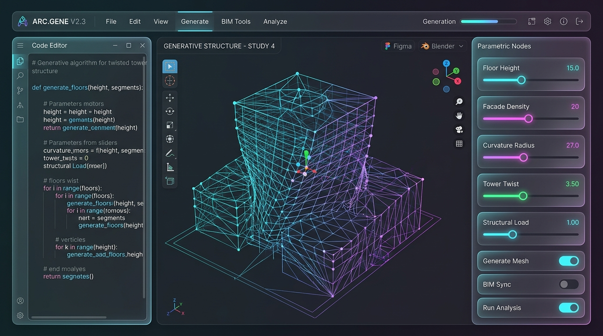
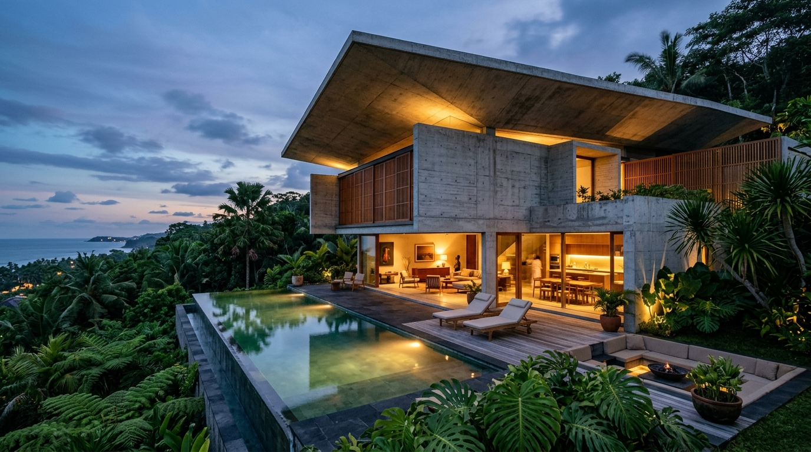

ARSI-FISIK & PARAMETRIKPaviliun Parametrik Nusantara
Struktur kanopi kayu laminasi melengkung ganda yang dioptimalkan dengan algoritma genetika (Grasshopper Kangaroo) untuk kekuatan beban gempa dan kenyamanan iklim mikro.
Saya mengawinkan keindahan desain arsitektur tropis & parametrik dengan presisi tinggi rekayasa perangkat lunak modern. Menghasilkan struktur spasial nyata sekaligus aplikasi Web 3D, digital twin, dan algoritma komputasi generatif.
Bagi saya, arsitektur bukan sekadar menggambar fasad, dan pemrograman bukan sekadar menulis sintaks. Keduanya adalah seni merancang sistem yang fungsional, adaptif, dan berorientasi pada manusia.
Memahami gravitasi, orientasi matahari, materialitas lokal, dan psikologi ruang. Merancang bangunan yang bernapas selaras dengan iklim tropis Indonesia.
Menerapkan prinsip clean architecture, efisiensi algoritma, grafika 3D interaktif, dan komputasi awan untuk mendigitalisasi dunia fisik ke layar web.
Pilihan proyek arsitektur fisik, platform perangkat lunak 3D, dan sistem parametrik yang telah saya rancang dan bangun.

ARSI-FISIK & PARAMETRIKStruktur kanopi kayu laminasi melengkung ganda yang dioptimalkan dengan algoritma genetika (Grasshopper Kangaroo) untuk kekuatan beban gempa dan kenyamanan iklim mikro.

BIM & BIOCLIMATIC TOWERMenara perkantoran modern dengan kisi fasad Voronoi adaptif yang diprogram menggunakan Python Ladybug untuk memotong beban radiasi panas surya hingga 38%.

WEB CAD & SOFTWAREAplikasi web berbasis browser untuk perancangan volume massa arsitektur parametrik secara real-time dengan kalkulasi instan Gross Floor Area (GFA) dan ekspor glTF/IFC.

RESIDENTIAL ARSITEKTURHunian peristirahatan tebing tebing laut dengan beton ekspos bertekstur sirap jati, kantilever atap dramatis, serta sistem otomasi mikrokontroler mandiri hemat daya.
Platform digital twin 3D gedung pintar interaktif berbasis web untuk memonitor konsumsi energi HVAC, sensor kualitas udara (IAQ), dan heatmap pergerakan manusia secara real-time.
Tool open-source berkinerja tinggi untuk mengonversi geometri kompleks Grasshopper dan Rhino 3DM ke format web 3D (glTF 2.0 / Draco) dengan kompresi ukuran file hingga 78%.
Rasakan langsung bagaimana variabel matematika dan baris kode membentuk geometri arsitektur secara real-time. Ubah parameter di bawah dan perhatikan kode generator yang disinkronkan.
# Computational Tower Generator
import rhinoscriptsyntax as rs
import math
floors = 24
twist_angle = 90.0 # deg
taper_ratio = 0.65
def generate_tower():
pts = []
for i in range(floors):
rot = (twist_angle / floors) * i
scale = 1.0 - (1.0 - taper_ratio) * (i / floors)
...Alat dan bahasa yang saya gunakan sehari-hari untuk mendesain ruang nyata berstandar internasional dan memprogram sistem digital modern.
Proses kerja terintegrasi yang menjembatani simulasi komputasi dengan ketepatan eksekusi konstruksi fisik.
Mengeksplorasi ribuan variasi geometri melalui kode parametrik untuk mendapatkan bentuk spasial yang paling optimal terhadap fungsi dan iklim.
Validasi struktural beban gempa, radiasi matahari (solar heat gain), dan kalkulasi kuantitas material secara otomatis via model data BIM.
Membangun visualisasi interaktif di web sehingga klien dan tim kontraktor dapat menginspeksi ruang 3D secara transparan dari perangkat apa pun.
Menghasilkan gambar kerja presisi (Shop Drawings) dan file CNC/laser cut langsung dari model komputasi tanpa distorsi ukuran.
Apakah Anda membutuhkan perancangan arsitektur hunian eksklusif, fasad parametrik, aplikasi web 3D, atau konsultasi teknologi spasial? Saya siap membantu.
+62 813-1234-6670 (Respon Cepat)
irvan.archtech@gmail.com
github.com/irvansyah-code
linkedin.com/in/irvan-computational
Tersedia untuk proyek fisik di seluruh Indonesia & proyek remote global software / 3D consulting.